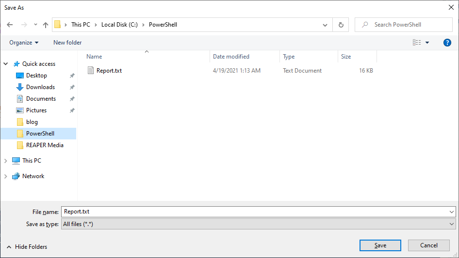
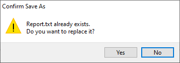
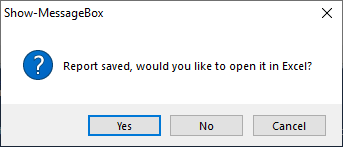

Fast and easy way to create GUI components in PowerShell
Cause
- Graphical interfaces are more accessible then console commands and text interfaces
- PowerShell offers the Windows Forms API to create GUI objects.
- Creating GUI objects in the typical fashion is laborious, hard to read, and error prone.
- The management of such code is difficult due to the above effects, especially if you need extend, change, or remove functionality.
- This effect is exponential depending on how many GUI objects you manage at once.
$Report = Get-Process
[System.Reflection.Assembly]::LoadWithPartialName("System.Windows.Forms") | Out-Null
$SaveReportFileDialog = New-Object System.Windows.Forms.SaveFileDialog
$SaveReportFileDialog.InitialDirectory = "$($Env:USERPROFILE)\Downloads"
$SaveReportFileDialog.FileName = "Report.txt"
$SaveReportFileDialog.Filter = “All files (*.*)| *.*”
$SaveReportFileDialog.ShowDialog() | Out-Null
$SaveReportPath = $SaveReportFileDialog.FileName
$Report | Export-CSV -Delimiter "`t" -Path $SaveReportPath -NoTypeInformation
$UserResponse = [System.Windows.Forms.MessageBox]::Show("Report saved, would you like to open it in Excel?", "", [System.Windows.Forms.MessageBoxButtons]::YesNoCancel, [System.Windows.Forms.MessageBoxIcon]::Question)
if ($UserResponse -eq "Yes") {
Start-Process excel.exe -ArgumentList $SaveReportPath
}Solution
- Hide the implementation of WinForms components in easy to use, readable, and reusable functions.
Technical Details
function Show-MessageBox {
param(
$Text = "",
$Caption = $(if ($ScriptName = ($MyInvocation.ScriptName)) { $ScriptName | Split-Path -Leaf } else { $MyInvocation.MyCommand.Name } ),
[ValidateSet("OK","OKCancel","AbortRetryIgnore","YesNoCancel","YesNo","RetryCancel")]$Button = "Ok",
[ValidateSet("None","Hand","Error","Stop","Question","Exclamation","Warning","Asterisk","Information")]$Icon = "None"
)
[System.Reflection.Assembly]::LoadWithPartialName("System.Windows.Forms") | Out-Null
[System.Windows.Forms.MessageBox]::Show($Text, $Caption, [System.Windows.Forms.MessageBoxButtons]::$Button, [System.Windows.Forms.MessageBoxIcon]::$Icon)
}
function Get-FilePathViaDialog {
param(
[ValidateSet("Open","Save")]$Type = "Open",
$InitialDirectory = $Env:USERPROFILE,
$FileName = "",
$Filter = “All files (*.*)| *.*”,
[Switch]$Multiselect
)
[System.Reflection.Assembly]::LoadWithPartialName(“System.Windows.Forms”) | Out-Null
$FileDialog = New-Object System.Windows.Forms.$($Type)FileDialog -Property @{
InitialDirectory = $InitialDirectory
FileName = $FileName
Filter = $Filter
}
if ($Type -eq "Open" -and $Multiselect) { $FileDialog.Multiselect = $True }
$FileDialog.ShowDialog() | Out-Null
$FileDialog.Filenames
}Example
$GetProcessReport = Get-Process | Select-Object -First 20
$ReportPath = Get-FilePathViaDialog -Type "Save" -FileName "Report.txt" -InitialDirectory "$($Env:USERPROFILE)\Downloads"
$GetProcessReport | Export-CSV -Delimiter "`t" -Path $ReportPath -NoTypeInformation
if ("Yes" -eq (Show-MessageBox -Text "Report saved, would you like to open it in Excel?" -Button YesNoCancel -Icon Question)) {
Start-Process excel.exe -ArgumentList $ReportPath
}

